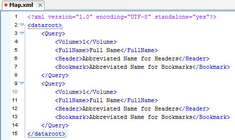
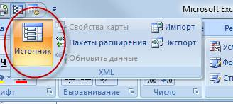
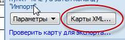
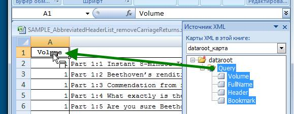
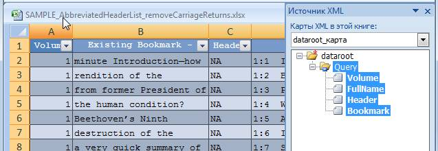

How to create usable in InDesign xml-files exported from Excel
Here’s my recipe for creating usable in InDesign xml-files exported from Excel:
The screenshots were made in Russian version of Excel, but I’m sure you can figure out what I mean.
1. Create a sample xml-file with the structure you want to get.
I created it in oXygen to show Excel what kind of xml-structure I want to get on export. It’s important to have at least a couple of elements. If you have only one element, it won’t work.

2. In Excel select Source from the Developer tab.

If the Developer tab is not visible in Excel, you can display it by accessing the Popular tab of the Excel Options dialog and clicking the checkbox: Show Developer tab in the Ribbon.
3. Click the XML Maps button in the Task Pane.

The XML Maps dialog appears.
4. Click the Add button.
The Select XML Source dialog appears. Select the sample xml-file (created in step 1) to structure your data.
Click OK.
The dataroot_Map appears in the XML Structure Pane with a list of XML elements
beneath it.
5. Drag the parent element (in my case it is the “Query” element) from the XML Structure pane to cell A1

6. The entire xml-structure appears in the spreadsheet, starting from cell A1.

When you are finished entering data and ready to create XML, there’s an important trick that you need to know about creating usable xml-file from Excel. Although Excel provides a Save As “XML Spreadsheet” command, don’t use it. The resulting file is really not usable for us. There are two ways that can create a proper XML:
- Choose XML Data (*.xml) from the “Save as type” pull-down menu in the Save As dialog
- Select Export from the Developer tab.